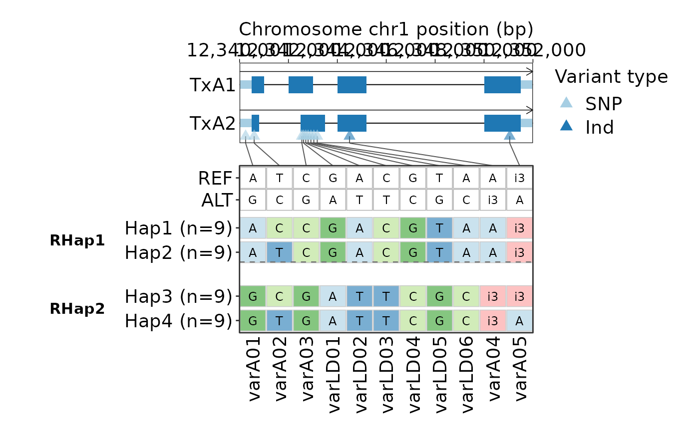

Plot grouped variant table for refined haplotypes
Source:R/haplotype_refinement.R
plot_refined_hap_variant.RdDraw a refined haplotype-variant table. By default, when the input is a
HapRefined object, the original haplotype rows are retained and arranged
into refined haplotype blocks. For example, if ten original haplotypes are
refined into three groups, the table shows the ten original haplotypes split
into three vertically separated blocks. This makes it easier to inspect which
variants are shared or variable within each refined group.
If collapse_refined = TRUE, the function falls back to a collapsed refined
table in which each refined haplotype is shown as one row, using the same
visual grammar as plot_hap_variant().
Usage
plot_refined_hap_variant(
refined_hap,
annotation = NULL,
show_gene_model = TRUE,
min_hap_samples = 5L,
show_reference_row = TRUE,
collapse_refined = FALSE,
group_gap = 0.8,
show_group_label = TRUE,
group_label_prefix = "",
group_label_hjust = 3.4,
group_label_size = NULL,
group_label_left_margin = NULL,
variant_label = c("variant_id", "pos"),
show_gene_pos_axis = TRUE,
gene_pos_axis_n = 5L,
gene_pos_axis_label = NULL,
gene_pos_x_angle = 0,
gene_track_legend_position = c("right", "top", "none"),
text_size = 14,
table_x_angle = 90,
genotype_text_size = 3.2,
gene_track_height = 1.25,
connector_height = 0.35,
table_height = NULL,
exon_height = 0.22,
cds_height = 0.44,
gene_palette = "Paired",
gene_colors = NULL,
gene_border_color = NA,
table_palette = "Paired",
table_colors = NULL,
table_alpha = 0.6,
reference_fill = "white",
variant_palette = "Paired",
variant_colors = NULL
)Arguments
- refined_hap
A
HapRefinedobject returned byrefine_haplotype()or a refinedHapVariantobject. The grouped display requires aHapRefinedobject generated by the current version ofrefine_haplotype().- annotation
Optional Feature/GenePred annotation object. When supplied, a compact gene track is drawn above the refined haplotype table.
- show_gene_model
Logical. Whether to draw the gene track when
annotationis supplied.- min_hap_samples
Minimum sample number required for an original haplotype row.
- show_reference_row
Logical. Whether to add two reference rows showing REF and ALT alleles for each variant.
- collapse_refined
Logical. Whether to plot one collapsed row per refined haplotype group.
- group_gap
Numeric vertical gap inserted between refined haplotype blocks.
- show_group_label
Logical. Whether to show refined group labels on the left side of the table.
- group_label_prefix
Prefix used for left-side group labels.
- group_label_hjust
Horizontal adjustment for refined group labels. Larger values move the group labels further left and reduce overlap with original haplotype row labels.
- group_label_size
Text size for refined group labels. If NULL, it is derived from
text_size.- group_label_left_margin
Left plot margin used when refined group labels are shown. Increase this value when group labels are clipped.
- variant_label
Column used for variant labels. One of
variant_id,pos, or an existing column inhap$variants.- show_gene_pos_axis
Logical. Whether to show genomic coordinate labels above the gene track.
- gene_pos_axis_n
Approximate number of genomic coordinate ticks above the gene track.
- gene_pos_axis_label
Optional x-axis title for genomic coordinate labels.
- gene_pos_x_angle
Angle of gene-position x-axis labels.
- gene_track_legend_position
Legend position for variant-type markers in the gene track. One of
right,top, ornone.- text_size
Base text size for gene-track labels, axes, legends, and table axes.
- table_x_angle
Angle of haplotype table x-axis labels.
- genotype_text_size
Genotype cell text size only.
- gene_track_height
Relative height of the gene track panel.
- connector_height
Relative height of the connector panel.
- table_height
Relative height of the haplotype table panel. If NULL, it is inferred from the number of displayed rows and group gaps.
- exon_height
Height of exon boxes in the compact gene track.
- cds_height
Height of CDS boxes in the compact gene track.
- gene_palette
RColorBrewer palette name used for gene model feature fills.
- gene_colors
Optional custom fill colors for gene model features.
- gene_border_color
Border color for gene model feature boxes.
- table_palette
RColorBrewer palette name used for haplotype table fills. For allele-string haplotypes, the first five colors are always assigned in the fixed order A, T, C, G, and indel.
- table_colors
Optional custom fill colors for haplotype table genotypes. For allele-string haplotypes, use a vector named
A,T,C,G, andindel, or supply five unnamed colors in that order.- table_alpha
Alpha value for haplotype table fill colors.
- reference_fill
Background fill color for the REF and ALT reference rows.
- variant_palette
RColorBrewer palette name used for solid variant-type triangle marker colors.
- variant_colors
Optional custom colors for solid variant-type triangle markers.
Value
A patchwork object with attributes plot_data, variant_data,
gene_data, refined_haplotype_map, and refined_haplotypes when available.
Examples
vcf_file <- system.file("extdata", "gtr_demo_variants.vcf", package = "GeneTrackR")
pheno_file <- system.file("extdata", "gtr_demo_pheno.tsv", package = "GeneTrackR")
anno_file <- system.file("extdata", "gtr_demo.genePredExt", package = "GeneTrackR")
vcf <- read_vcf(vcf_file, mode = "memory", verbose = FALSE)
pheno <- read_pheno(pheno_file, verbose = FALSE)
anno <- read_genepred(anno_file, format = "genePredExt", verbose = FALSE)
hap <- hap_variant(vcf, annotation = anno, gene_id = "GeneA", genotype_mode = "string", min_variant_number = 1)
#> [GeneTrackR] Retrieved variants: 11.
refined <- refine_haplotype(
hap,
phenotype = pheno,
traits = "protein_content",
min_hap_samples = 3,
effect_threshold = 0.5
)
plot_refined_hap_variant(refined, annotation = anno, min_hap_samples = 1)
